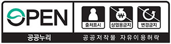

한국과학창의재단 종합·원격교육연수원(이하 ‘KOFAC 연수원’)는
KOFAC가 제공하는 서비스(이하 '서비스')의 내용을 보호하고, 타인의 지적재산권을 침해하지 않도록 다음과 같은 지적재산권 정책을 갖고 있습니다.
지적재산권의 소유
- 1. KOFAC가 제공하는 연구보고서, 뉴스 및 정보, 사진, 동영상, 이미지, 그래픽(이하 '컨텐츠')의 저작권과 판권은 별도의 표시가 없는 한 한국과학창의재단 종합·원격교육연수원의 소유이며, 저작권법의 보호를 받습니다.
- 2. 회원이나 사용자가 작성해 서비스에 게시한 글이나 자료(이하 '게시물')의 저작권은 게시물을 작성한 본인에게 있으며, 게시물이 제3자의 지적재산권을 침해한 경우, 그에 대한 책임은 게시물 작성자가 집니다.
- 3. KOFAC는 회원이나 사용자의 게시물에 대한 온라인 상에서의 게재권과 출판권을 갖습니다.
단 게시물을 출판하고자 할 경우에는 사전에 저작권자의 동의과정을 거치며, 이해 대한 좀 더 자세한 내용은 회원 약관 제14조(회원의 게시물)에 자세히 설명되어 있습니다.
KOFAC가 가진 지적재산권 보호
KOFAC가 제공하는 컨텐츠를 이용하고자 할 경우에는 다음의 규정을 따라야 합니다.
- 1. KOFAC의 서비스를 통해 제공받는 컨텐츠는 개인열람의 목적으로만 사용해야 합니다.
- 2. KOFAC의 서면에 의한 명시적 동의 없이 KOFAC가 제공하는 컨텐츠의 전부 혹은 일부를 전재, 복사, 양도, 재배포, 변조, 출판, 판매, 게시하거나 인터넷 사이트 제작/구성 및 데이터베이스 구축에 이용하는 것, 상품제작, 광고, 기타 영리적 목적으로 활용하는 것은 법으로 금지되어 있으며,이를 위반할 경우 민사상의 책임뿐만 아니라 형사처벌을 받을 수도 있습니다.
- 3. 저작권 보호 정책
저작권법 제24조의2에 따라 한국교육개발원에서 저작재산권의 전부를 보유한 저작물의 경우에는 별도의 허락 없이 이용이 가능합니다.
단, 이용이 가능한 자료는 “공공저작물 자유이용허락 표시 기준(공공누리,KOGL) 제4유형”을 부착하여 개방하고 있으므로 공공누리 표시가 부착된 저작물인지를 확인한 이후에 이용하시기 바랍니다.

- 본원 공공저작물 자유이용허락 표시기준 : 제 4유형
- - 출처 표시
- - 상업적 이용금지
- - 변형 등 2차적저작물 작성하여 이용금지
공공누리 마크가 부착된 저작물을 이용하실 경우에는, 반드시 저작물의 출처를 구체적으로 표시하여야 합니다.
또한, 한국과학창의재단 종합·원격교육연수원 홈페이지에는 본원이 저작권 전부를 갖고 있지 아니한 자료도 제공되고 있습니다.
즉, 공공저작물 자유이용허락 표시 기준(제 4유형)이 부착되지 않은 자료들을 사용하고자 할 경우에는 기관 담당자와 사전에 협의하여 주시기 바랍니다.
각종 링크의 사용 규칙
- 1. 비영리적 목적으로 개설된 사이트에 한하여 사전허락이 없는 단순링크(simple link)와 직접링크(deep link)를 허용합니다.
영리목적의 사이트는 모든 링크에 대한 사전 허락을 반드시 받아야 합니다.
- 2. 프리이밍 링크(framing link)와 임베디드 링크(embedded link)는 KOFAC의 사전 허락이 필요하며 이를 위반하였을 경우
저작권 침해로 간주합니다. 특히, 컨텐츠 파일(각종 문서 및 영상 파일)에 링크하여 다운로드 및 실행하도록 하는 경우 KOFAC의 컨텐츠 제공 협약에 의해서만 허용할 수 있습니다.
회원 및 사용자의 지적재산권 보호
- 1. KOFAC의 서비스에 게시된 회원이나 사용자의 게시물을 제3자가 사용하고자 할 경우에는 반드시 해당 회원이나 사용자의 명시적 동의를 얻은 뒤 사용해야 합니다.
- 2. KOFAC는 회원이나 사용자의 게시물 사용에 대한 동의를 중계하거나 그 과정에 개입하지 않습니다.
제3자의 지적재산권 보호
- 1. KOFAC의 서비스에 회원이나 사용자가 게시물을 작성할 때는 다음의 내용을 준수하셔서 제3자의 지적재산권을 침해하는 일이 없도록 하여야 합니다.
- 2. 타인이 원 저작권자의 명시적 동의 없이 원 저작권자가 만든 컨텐츠의 전부 혹은 일부를 게시, 전재, 복사, 재배포, 변조, 판매, 게시하는 것은 출처를 밝히더라도 저작권 침해에 해당합니다. 따라서 원 저작권자의 명시적 동의 없이 이런 게시물을 게시하거나 판매해서는안 됩니다.
분쟁해결 관할법원 및 법적용
지적재산권과 관련하여 소송이 제기될 경우'KOFAC'의 소재지를 관할하는 법원을 관할법원으로 하며 지적재산권의 해석 및 적용과 관련한 분쟁의 해결에는 대한민국법이 적용됩니다.
고충해결 및 문의
지적재산권과 관련하여 소송이 제기될 경우'KOFAC'의 소재지를 관할하는 법원을 관할법원으로 하며 지적재산권의 해석 및 적용과 관련한 분쟁의 해결에는 대한민국법이 적용됩니다.